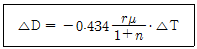
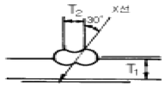
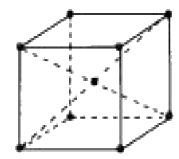

방사선비파괴검사기능사 (2005-04-03 기출문제)
1과목: 방사선투과시험법
1. 다음 중 방사선투과사진의 감도와 선명도를 향상시키는 방법으로 옳은 것은?
- 산란방사선을 증가시킨다.
- 필름의 입상성을 높게 한다.
- 시험체의 두께 변화차를 크게 한다.
- 시험체와 필름사이의 거리를 크게 한다.
(정답률: 28%)

2. X선과 γ선의 특성 설명 중 잘못된 것은?
- 매우 긴파장과 낮은 진동수를 갖는다.
- X선, γ선 모두 전자파의 일종이다.
- 방사선의 에너지는 투과력을 결정한다.
- 주어진 동위원소는 일정한 에너지를 방출한다.
(정답률: 알수없음)
3. 미소 두께차(ΔT)에 대응하는 투과사진 콘트라스트(ΔD)를 나타내는 아래 기본식에 대한 설명으로 맞는 것은? (단, r : 농도 D에 대한 특성곡선의 기울기, μ : 두께 T에 대한 선흡수계수, n : 두께 T를 투과한 지점에서의 산란비)

- 두께 T가 증가하면 농도 D가 감소한다.
- 두께차(ΔT)가 작은 범위에서 투과사진 콘트라스트 (ΔD)는 (ΔT)에 반비례한다.
- 양변에 환산계수 0.693(=ln2)가 상수로 주어져야 한다.
- 일정 두께차 (ΔT)에 대한 투과사진 콘트라스트 (ΔD)를 작게하기 위해서는 r와 μ를 크게 하고, n을 작게하는 촬영조건이어야 한다.
(정답률: 알수없음)
4. 다음 중 방사선 방호용 차폐체로 가장 효과가 큰 것은?
- 티타늄
- 강철
- 텅스텐
- 청동
(정답률: 알수없음)
5. γ선 장비를 사용시의 노출인자 식으로 맞은 것은?
- 노출인자 = (선원의 강도)2 × (노출시간)
- 노출인자 = {(선원의 강도) × (노출시간)} / (거리)2
- 노출인자 = {(거리) ×(노출시간)} / (선원의 강도)2
- 노출인자 = {(거리) ×(선원의 강도)} / (노출시간)2
(정답률: 알수없음)
6. X-선 튜브를 냉각시키는 물질이 아닌 것은?
- 물
- 기름
- 공기
- 지르코늄
(정답률: 알수없음)
7. 방사선투과시험시 선명도를 좋게 하기 위한 방법이 아닌것은?
- 소(小)초점의 X선 발생장치를 사용한다.
- 초점을 피사체 수직 중심선상에 둔다.
- 필름을 피사체에 가급적 밀착시킨다.
- 선원과 피사체의 거리를 작게 한다.
(정답률: 알수없음)
8. 2개의 투과도계를 놓고 촬영한 결과 어느 한쪽의 투과도계가 규격값을 만족하지 못했을 때, 그 사진의 판정은?
- 합격으로 한다.
- 결함상으로 판단한다.
- 불합격으로 한다.
- 합격 또는 불합격으로 한다.
(정답률: 알수없음)
9. 다음 중 방사선 투과사진을 식별하기 위하여 사진에 글자나 기호를 새겨 넣는데 사용하는 도구는?
- 필름 홀더
- 카세트
- 필름 마커
- 계조계
(정답률: 알수없음)
10. 다음 중 방사선투과시험에서 노출시간을 정할 때의 참고 자료는?
- 필름특성곡선
- 검량곡선
- 붕괴곡선
- 노출도표
(정답률: 알수없음)
11. X선 필름에 직접 닿는 전면의 연박증감지는 어떤 작용을 하는가?
- 1차 방사선을 가시광선으로 바꾸어 준다.
- 1차 방사선을 더 강하게 하고, 산란 방사선을 감소시켜 준다.
- 1차 방사선을 차폐해 준다.
- 산란 방사선을 방지하는데 주목적이 있다.
(정답률: 알수없음)
12. 다음의 방사선중 투과력이 가장 큰 것은?
- α입자
- β입자
- γ선
- 열전자
(정답률: 알수없음)
13. 다음 중 방사선투과시험의 상질계(像質計 : I.Q.I)로 볼 수 없는 것은?
- 계조계
- 선질계
- 증감지
- 투과도계
(정답률: 알수없음)
14. 다음 중 자분탐상 시험방법만으로 묶여진 것은?
- 반사법과 공진법
- 투과법과 건식법
- 극간법과 프로드법
- 내삽법과 프로브법
(정답률: 알수없음)
15. X선 발생장치의 유리관 내부가 진공으로 되어 있는 이유의 설명으로 잘못된 것은?
- 필라멘트에서의 전자방출을 촉진하기 위한 것이다.
- 전극간의 전기적 절연을 방지하기 위한 것이다.
- 필라멘트의 산화와 연소를 방지한다.
- 고속도의 전자는 공기중에서 이온화하여 에너지를 손실 하므로 이것을 방지하기 위한 것이다.
(정답률: 알수없음)
16. 후유화성 침투액을 쓰는 침투탐상시험에서 유화제는 다음중 언제 적용해야 적정한가?
- 침투액 적용전
- 침투액 수세후
- 침투시간 경과후
- 현상시간 경과후
(정답률: 알수없음)
17. 기하학적 불선명도와 관련하여 좋은 식별도를 얻기 위한 조건으로 틀린 것은?
- 초점이 작은 X-선 장치를 사용한다.
- 초점(선원)-시험체간 거리를 작게 한다.
- 필름을 시험체에 가능한한 밀착시킨다.
- 초점을 시험체의 수직 중심선상에 정확히 놓아야 한다.
(정답률: 알수없음)
18. 고온 및 고습도일 때 필름이 실제적으로 필요한 시간이상으로 연박스크린 사이에 놓여 있을 때 필름에 나타나는 현상은?
- 압흔현상
- 주름현상
- fog현상
- airbell현상
(정답률: 알수없음)
19. 다음 비파괴검사법중 단조품의 내부결함 위치를 검출하는 데 가장 적합한 시험법은?
- 방사선투과시험법
- 초음파탐상시험법
- 자기탐상시험법
- 침투탐상시험법
(정답률: 알수없음)
20. 다음 중 음향방출검사(AET)와 관련이 없는 것은?
- 음향반사
- 카이져 효과
- 소성변형에 의한 에너지 방출
- 동적 불연속의 탐지
(정답률: 알수없음)
2과목: 방사선안전관리 관련규격
21. 다음 중 투과사진상에 나타나는 기공의 형상은?
- 주로 검은 원형지시로 나타난다.
- 주로 검고 긴 선형지시로 나타난다.
- 주로 모재와 용접부 사이의 경계에 선으로 나타난다.
- 주로 비드 중앙에 검은 일직선 형상으로 나타난다.
(정답률: 알수없음)
22. 방사선투과사진 촬영시 필름의 양측에 밀착시켜 방사선 에너지를 유효하게 하는 것은?
- 계조계
- 밀도계
- 증감지
- 투과도계
(정답률: 알수없음)
23. 10㎝ 거리에서 900mR/h를 방출하는 방사선원으로, 100mR/h의 선량율을 받으려면 거리는 얼마정도 떨어져야 하는가?
- 30㎝
- 40㎝
- 50㎝
- 90㎝
(정답률: 알수없음)
24. 다음 중 X선이 방사선투과시험에 사용될 수 있는 주된 성질은?
- 광전자를 방출하는 성질
- 기체를 전리시키는 성질
- 유제를 감광시키는 성질
- 검사체를 방사화시키는 성질
(정답률: 알수없음)
25. 방사선투과검사시 공간 방사선량율을 측정하는 장비는?
- 필름뱃지
- 서베이메터
- 포켓 도시메터
- 포켓 챔버
(정답률: 알수없음)
26. 다음 중 외부개인피폭관리용 측정기기로 적당하지 않은 것은?
- 필름 뺏지
- 전신 계수기
- 포켓 선량계
- 열형광 선량계
(정답률: 알수없음)
27. 다음 중 방사성 동위원소의 반감기에 대한 표현으로 옳지 않은 것은? (단, λ는 붕괴상수이다.)
- T½
- 0.693 / λ
- ln2 / λ
- (1/2) × λ
(정답률: 알수없음)
28. KS B 0845에 의거 강판의 T용접 이음부에만 사용되는 투과사진의 상질 적용에 해당되는 것은?
- A급
- B급
- F급
- P1급
(정답률: 알수없음)
29. 알루미늄 주물에 대한 방사선투과시험을 규정한 KS D 0241에서 사용되는 증감지의 두께 범위로 올바른 것은?
- 0.02~0.25cm
- 0.02~0.25mm
- 0.50~2.00mm
- 0.50~2.00cm
(정답률: 알수없음)
30. KS B 0845에서 규정하는 투과사진의 관찰에 사용하는 관찰기의 종류로 맞는 것은?
- D10, D20, D30, D40
- D10, D20, D30, D35
- D10, D15, D20, D25
- D10, D11, D12, D13
(정답률: 알수없음)
31. 다음 중 방사선 차폐체로 가장 좋은 것은? (단, 동일한 두께에서)
- 유리
- 납
- 그리스
- 탄소강
(정답률: 알수없음)
32. 방사선작업자의 일정 기간 동안의 피폭선량이 최대허용선량을 초과하지는 않았으나 초과될 염려가 있다고 판단하였을 때 다음 중 작업책임자가 일차적으로 취할수 있는 조치로 적합치 않은 것은?
- 작업원의 배치를 변경한다.
- 작업방법을 개선한다.
- 방사성 물질을 폐기시킨다.
- 차폐 및 안전 설비를 강화한다.
(정답률: 알수없음)
33. 원자력법령에 따른 방사선 또는 방사성물질의 취급에 수반되어야할 사항으로 적합하지 않은 것은?
- 거주제한구역을 설정하고 주민을 모두 소개한다.
- 작업계획을 수립하고 방법, 순서를 명확히 한다.
- 적절한 시설, 기구와 방사선측정기를 설비한다.
- 취급 기술을 연마, 숙달시킨다.
(정답률: 알수없음)
34. 양면 개선된 알루미늄 T형 용접부를 KS D 0245 규격에 따라 방사선투과검사시 필요한 계조계의 종류는? (단, T1 : 6mm, T2 : 11mm)

- A형
- B형
- C형
- D형
(정답률: 알수없음)
35. KS D 0227에 의한 투과사진의 촬영방법에서 투과도계를 시험부의 선원쪽 면위에 놓기가 곤란한 경우 필름면 위에 밀착하여 놓을 수 있다. 이에 대한 설명으로 올바른 것은?
- 이 경우 투과도계와 필름사이의 거리는 투과도계의 최소 식별 선지름의 2배이상으로 하고 촬영한다.
- 이 경우 투과도계와 필름사이의 거리는 투과도계의 최소 식별 선지름의 5배이상으로 하고 촬영한다.
- 이 경우 투과도계 밑에 S의 기호를 붙인다.
- 이 경우 투과도계의 부분에 F의 기호를 붙인다.
(정답률: 알수없음)
36. KS B 0845 부속서에 따른 2중벽 편면 촬영방법에서 적용되는 투과사진 상질의 종류에 해당되지 않는 것은?
- A급
- B급
- P1급
- P2급
(정답률: 알수없음)
37. KS B 0845에 의한 방사선투과시험의 시험 성적서 기록에서 시험조건 관련 사용장치 및 재료 항목에 포함되지 않는 내용은?
- 방사선 투과장치명 및 실효 초점치수
- 필름 및 증감지의 종류
- 투과도계의 종류
- 시험품의 재질 및 두께
(정답률: 알수없음)
38. KS B 0845 강용접 이음부의 방사선투과 시험방법에 따른 모재두께 60mm의 강판 촬영에 대한 흠 상의 분류에서, 제1종 흠의 경우 흠의 긴지름이 얼마이하일 때 흠으로 산정하지 않는다고 규정하고 있는가?
- 모재 두께의 1%
- 모재 두께의 1.4%
- 모재 두께의 2%
- 모재 두께의 3%
(정답률: 알수없음)
39. 원자력법상 과학기술부장관이 정하는 방사선관리구역중 1주당 외부방사선량율의 규정으로 맞는 것은?
- 40마이크로시버트 이상
- 400마이크로시버트 이상
- 40밀리시버트 이상
- 400밀리시버트 이상
(정답률: 알수없음)
40. 다음 중 현상처리 전에 기인된 인공결함이 아닌 것은?
- 필름 스크래치(film scratch)
- 압흔(pressure mark)
- 정전기 표시(static mark)
- 주름(frilling)
(정답률: 알수없음)
3과목: 금속재료일반 및 용접 일반
41. 인터넷 서비스중 파일전송 서비스는 원거리 컴퓨터에서 파일들을 받기 위해 사용하는 서비스이다. 이 서비스에서는 접속시 사용자 ID와 PASSWORD를 입력하게 되어 있다. 일반 공공 사용자들을 위해 공개된 사이트(site)에서 입력하게 되는 공개 사용자 ID는 무엇인가?
- User
- Public
- Anonymous
- Guest
(정답률: 알수없음)
42. 자격증과 컴퓨터에 관련된 자료를 kr.yahoo.com에서 찾으려고 한다. 가장 알맞은 검색식은?
- 자격증-컴퓨터
- 자격증@컴퓨터
- 자격증#컴퓨터
- 자격증&컴퓨터
(정답률: 알수없음)
43. HTML 문서를 구성하는 요소 중 가장 나중에 나오는 기본 태크는 무엇인가?
- </HTML>
- </DOCUMENT>
- </BODY>
- </TITLE>
(정답률: 알수없음)
44. 컴퓨터 시스템내에서 데이터들의 이동하는 전류의 길은?
- 캐시
- 버스라인
- PROM
- 비트
(정답률: 알수없음)
45. 다음 중 프로그램 저작권 침해 및 불법 복사 행위가 아닌것은?
- 특정 소프트웨어를 구입한 뒤 사본을 만들어 친구에게 주는 행위
- 출처가 분명치 않은 소프트웨어를 구입하거나 무료로 사용하는 행위
- 소프트웨어 패키지에 접근 가능한 사용자 수를 초과하여 사용하는 행위
- 하드디스크가 파괴되는 경우를 대비하여 플로피 디스크에 복사해 두는 행위
(정답률: 알수없음)
46. 철강 재료의 감별법으로 옳지 않은 것은?
- 불꽃 시험편
- 형광 침투법
- 시약 반응법
- 접촉력 기전력법
(정답률: 알수없음)
47. 해드필드강(hadfield steel)은?
- 페라이트계 고니켈강이다.
- 오스테나이트계 고망간강이다.
- 펄라이트계 고크롬강이다.
- 펄라이트계 저니켈강이다.
(정답률: 알수없음)
48. 다음 그림의 결정 격자형은?

- 체심입방격자
- 면심입방격자
- 조밀육방격자
- 면정방격자
(정답률: 알수없음)
49. 다음 중 기계적 성질이 아닌 것은?
- 열팽창계수
- 강도
- 취성
- 탄성한도
(정답률: 알수없음)
50. 주철의 상 중에서 가장 단단하며 백주철의 주체가 되는 것은?
- 페라이트
- 시멘타이트
- 오스테나이트
- 펄라이트
(정답률: 알수없음)
51. 공업적으로 경합금 재료에 속하는 것은?
- 주철
- 탄소강
- 합금철
- 알루미늄합금
(정답률: 알수없음)
52. 노말라이징(normalizing)열처리의 목적으로 옳지 않은 것은?
- 결정조직을 조대화시킨다.
- 과열조직을 미세화한다.
- 기계적 성질을 표준화시킨다.
- 내부응력을 제거한다.
(정답률: 알수없음)
53. 고속도강의 고온에서 경도 저하를 방지하기 위해 탄소강에 첨가하는 원소로 옳지 않은 것은?
- Cu
- Cr
- W
- Co
(정답률: 알수없음)
54. 포금(gun metal)이란?
- Mg에 8~12[%] Sn와 소량의 Pb를 넣은 것
- Al에 8~12[%] Zn과 소량의 Sn을 넣은 것
- Ag에 10~15[%] Zn과 1[%] Al을 넣은 것
- Cu에 8~12[%] Sn과 1~2[%] Zn을 넣은 것
(정답률: 알수없음)
55. 상온에서 조밀육방격자(HCP)만으로 짝지어진 것은?
- Cr, Mo
- Fe, Ca
- Ti, Mg
- Cu, Ag
(정답률: 알수없음)
56. Fe-C계 평형 상태도에서 1,130℃, 4.3% C를 함유하는 점을 무엇이라 하는가?
- 공정점
- 포정점
- 자기 변태점
- 공석점
(정답률: 알수없음)
57. 용융금속이 응고할 때 먼저 응고하는 순서로 옳은 것은?
- 핵 → 수지상정 → 결정입계
- 결정입계 → 수지상정 → 핵
- 핵 → 결정입계 → 수지상정
- 수지상정 → 결정입계 → 핵
(정답률: 알수없음)
58. 정격2차전류 200A, 정격사용율 40%의 아크용접기로 180A의 용접전류를 사용하여 용접할 때의 허용 사용율은?
- 44.4 %
- 49.4 %
- 81.0 %
- 90.0 %
(정답률: 알수없음)
59. 이산화탄소(CO2) 용접할 때, 용접부에 발생하는 다공성의 원인이 되는 가스만으로 조합된 항으로 다음 중 가장 적합한 것은?
- 이산화탄소, 수소, 산소
- 헤륨, 알곤, 이산화탄소
- 황, 인, 질소
- 일산화탄소, 질소, 수소
(정답률: 알수없음)
60. 산소와 아세틸렌에 의한 보통의 가스용접을 하려고 할 때 산소압력과 아세틸렌가스 압력의 조정범위로 가장 적합한 것는?
- 산소압력 : 3∼4[kgf/㎝2], 아세틸렌압력 : 0.1∼0.3[kgf/㎝2]
- 산소압력 : 5∼6[kgf/㎝2], 아세틸렌압력 : 0.3∼0.5[kgf/㎝2]
- 산소압력 : 1∼2[kgf/㎝2], 아세틸렌압력 : 1∼2[kgf/㎝2]
- 산소압력 : 3∼4[kgf/㎝2], 아세틸렌압력 : 3∼4[kgf/㎝2]
(정답률: 알수없음)